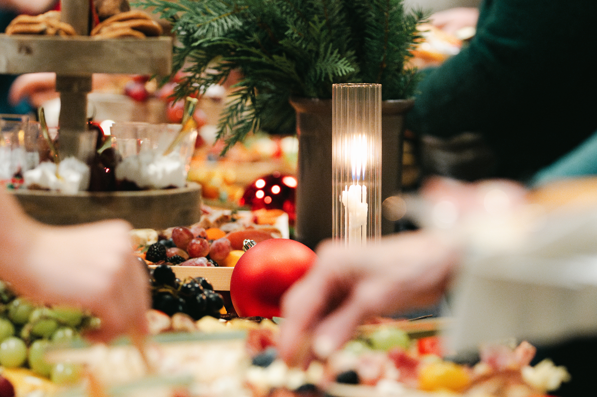
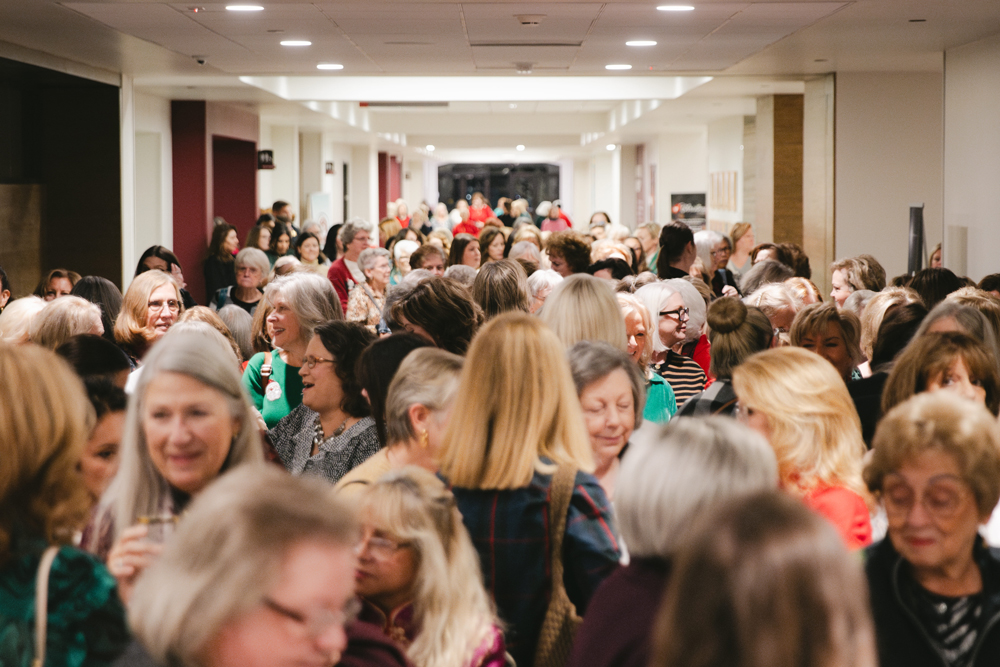

Dessert & Worship Ticket
Includes a reserved seat in a designated room for dessert and entry to the worship/speaker event in the Sanctuary.
●Dessert begins at 6:00 p.m. throughout Main Building.
●Child care is available with this ticket.


Celebrate the arrival of the Christmas season on Thursday, December 3, with an uplifting evening of fellowship, decadent desserts, powerful worship, and an inspiring message from author, speaker, and Bible study teacher Kristi McLelland. Join TWMC Women’s Ministry as we begin the Advent season together.
Kristi is a professor at Williamson College and the bestselling author of Rediscovering Israel, Jesus & Women, Luke in the Land, Feasting on God’s Word, and The Gospel on the Ground Bible studies. Kristi teaches the Bible in its historical, cultural, geographic, and linguistic contexts. She encourages believers to be postured to receive what the living God is saying through communally experiencing Scripture. Kristi teaches about the goodness of God, often experienced through table fellowship, practicing hospitality, and collaborative wisdom.
Includes a reserved seat in a designated room for dessert and entry to the worship/speaker event in the Sanctuary.
Includes a private room for dessert, signed book, meet and greet with Kristi, and reserved seating in the Sanctuary.
Provides entrance to the worship/speaker event in the Sanctuary.




Lots B, C, D, E, F and G on the east side of the church are closest to the Sanctuary. Follow the signage posted in the parking lots.
Dessert takes place throughout our main building, including Wesley Hall, Hayes Hall, Room 204 (A&B) on the second floor, Asbury Hall, Harvest Foyer, Jones Library and Aldersgate Hall for VIP.